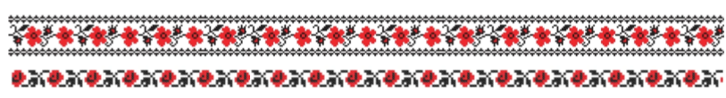

What Even is an Algorithm?
An algorithm is just a set of clear instructions that tell you how to accomplish a particular task. If you’ve ever followed a recipe or built IKEA furniture, you’ve used an algorithm before!
Some algorithms are very simple, moving step by step in a straight line. Others are a bit more complex, looping or branching like twists and turns in a dance. The key is that they always have a purpose and a goal.
Key Features of Algorithms
The Steps:
Every algorithm has specific steps. Skipping a step is like missing a move in a dance, and the combination of steps is what makes each algorithm unique.The Flow:
Some algorithms go straight from start to finish. Others repeat certain steps (loops) or make choices along the way (branches), just like different formations in a dance.The Goal:
The aim of an algorithm is to get a reliable method for doing a particular task. Some algorithms are better at doing particular tasks. Figuring out which one to use when is part of what makes programming an art
Why Algorithms Matter
Algorithms are all around us. They decide:
- What shows up in your social media feed
- How a GPS finds the fastest route
- How search engines rank pages
- How a game decides what happens next
Types of Algorithms to Consider
Sorting algorithms
These are used with information stored in a “line” (commonly called an array). Sorting algorithms decide how to organize items in a particular order, such as ascending or descending, until a desired condition is met. Sorting is a foundational concept in computer science and appears in many real-world applications like ranking scores, arranging names alphabetically, or organizing files.
Sorting Examples
- Bubble Sort – repeatedly swaps adjacent items if they are in the wrong order.
- Merge Sort – divides the list into smaller pieces, sorts them, and merges them back together.
- Quick Sort – picks a pivot element and partitions the list into smaller and larger elements recursively.
Graph algorithms
These are used with information stored in a graph, which is a set of nodes (points) connected by edges (lines). Graph algorithms are used to find paths, optimize routes, or discover relationships between nodes. This is helpful in GPS navigation, network analysis, social media connections, and more.
Graph Examples
- Dijkstra’s Algorithm – finds the shortest path between nodes in a weighted graph.
- A* Search – finds the most efficient route using heuristics to guide the search.
- Depth-First Search (DFS) – explores as far as possible along each branch before backtracking.
- Breadth-First Search (BFS) – explores all neighbors level by level, useful for finding shortest paths in unweighted graphs.
- Click here to read more about graph algorithms
Generating algorithms
These are used with information stored in a line or sequence (often text) where the order matters. Sequence generators predict the next item in a series based on previous items. This is widely used in text prediction, music composition, and procedural generation of content.
Generating Examples
- Markov Chains – generates sequences where the next item depends only on the current item or state. Great for generating new dance moves, music notes, or text sequences.
- N-grams – looks at sequences of n items to predict the next item, capturing patterns from previous n-1 steps. Useful for generating coherent sequences in text, music, or choreography.
- de Bruijn sequences – generates sequences that cover all possible combinations of a set of elements exactly once. Useful in puzzles, coding theory, and sequence testing.
Sorting Algorithm Example
Let’s take a peek at the Bubble Sort algorithm. Bubble Sort is a simple algorithm that repeatedly steps through a list, compares adjacent items, and swaps them if they are in the wrong order. Think of each comparison as a “dance move” and each swap as changing of positions of the dancers in the choreography.
The algorithm starts at the beginning and checks each bar with it’s neighbor by outlining in orange. If the bars are not in the correct order, the bars swap spots. Otherwise, it moves to the next set of neighbors. This continues until every bar is in the correct order and correct position.
Bubble Sort in Pseudocode
Below is what we call pseudocode which is a formal way to document the procedure of steps taken.
procedure BubbleSort(A)
n = length(A)
for i from 1 to n-1 do
for j from 0 to n-i-1 do
if A[j] > A[j+1] then
swap A[j] and A[j+1]
end if
end for
end for
end procedureStep-by-Step Explanation of Bubble Sort
Outer loop (
i): The linefor i from 1 to n-1 dogoes through the entire list multiple times. Each pass ensures that the largest unsorted item “bubbles up” to its correct position at the end of the list.Inner loop (
j): The linefor j from 0 to n-i-1 domoves through the unsorted portion of the list. It compares each item with its immediate neighbor on the right.Swap step: The line
swap A[j] and A[j+1]checks if the two neighboring items are in the wrong order. If they are, it exchanges them, moving the larger value toward the end of the list.Repeat: This process repeats for all passes until no swaps are needed, meaning all elements are sorted.
n-i-1ensures that the inner loop does not compare elements that are already sorted at the end.
- Each pass of the outer loop guarantees that at least one element is placed in its final position.
- Bubble Sort is simple but not very efficient for large lists (mainly used for teaching and small data).
There are a plethora of resources out there to visualize sorting algorithms. Here is another example.
Sequence Generating Algorithm Example
Let’s start with building blocks: A , B, and BA
For each building block we can assign probabilities for which block follows which:
| Current Move | Next Move Options |
|---|---|
| A | B (70%), BA (30%) |
| B | A (50%), BA (50%) |
| BA | A (100%) |
Example Sequence Generation:
- Start with A.
- Randomly pick the next move according to probabilities:
- 70% chance → B
- 30% chance → BA
- Repeat
A possible sequence generated could be something like: A → B → BA → A → B → A → BA' orABBAABABA`. Between each arrow you can also decide to add in some transition steps. There are many ways to take this process to generate specific styles of dance.
Building Blocks
To configure these to a particular style, you can decide what building blocks constitute a move. For example, you might include simple blocks like A or B, or more complex subsequences such as AB or BAF. Each block can represent a step, a pose, or a short combination of movements.
Likelihoods
You can also define how likely it is to move from one subsequence to another by adjusting the probabilities. For example:
- From A you might have a 70% chance to go to B and a 30% chance to go to AB.
- From B, you might allow a 50% chance to repeat B or a 50% chance to go to BA.
The “Juice” (what we call style)
Beyond simple transitions, you can add more sophisticated rules to create a richer choreography style:
- Stops or pauses: Certain subsequences might require a deliberate stop or hold before continuing.
- Loops: You can decide how many times a sequence can repeat before moving on, preventing the routine from getting stuck in the same pattern.
- Constraints on combinations: Perhaps some subsequences cannot follow certain others, or some must always appear after another block.
- Weighted variation: You can increase variety by making rare transitions possible but unlikely, giving the dance unpredictability while keeping it stylistically consistent.
- Dynamic probabilities: You could even change the probabilities over time—for instance, start with simple moves and gradually favor more complex subsequences as the sequence progresses.
In short, the list goes on. By tuning the building blocks, probabilities, and rules, you can create choreography that feels both structured and expressive, while still being generated automatically by the algorithm. This approach lets you capture the style of a dance, text, or music pattern and produce new, coherent sequences that match that style.